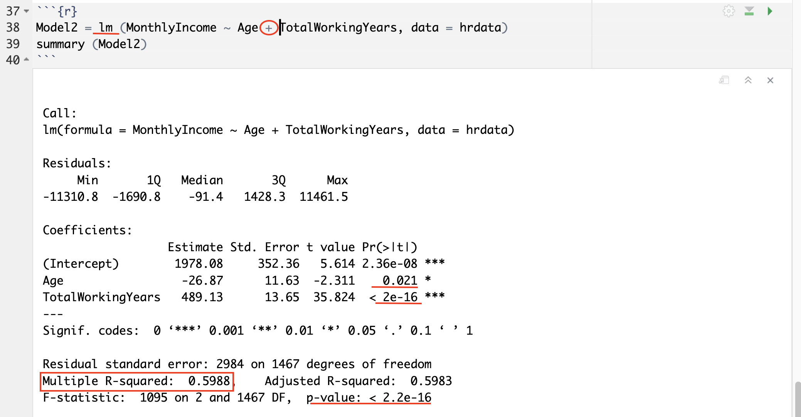

What Predicts Pay and Who Leaves?
R · Regression · Hypothesis testing
Question
Do employees who leave a company differ in age from those who stay, and how well do age and experience predict monthly income?
Approach
Explored 1,470 employee records in R with a correlation matrix, compared the ages of leavers and stayers with a t test, and fit two linear regression models for monthly income.
Result
Employees who left were younger on average (33.6 vs 37.6 years), a difference very unlikely to be chance. Age alone explained 25% of the variation in income. Adding total working years raised that to 60%.
Bootcamp project. The data is a fictional practice dataset created by IBM data scientists and shared on Kaggle.